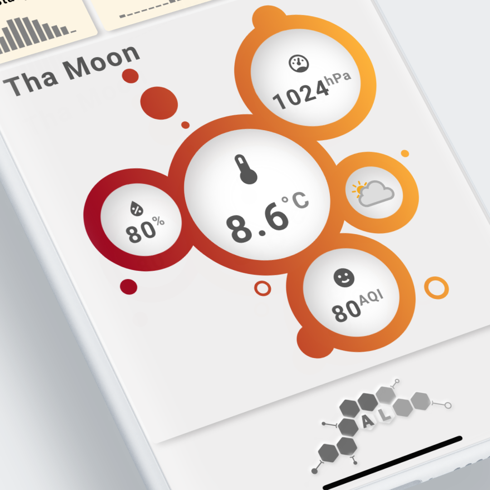

Designing your card
Where to start?¶
So, you came here to read how to design your own card. That's good!
If you're a graphic designer or at least some UX guy/woman, you will probably have tons of idea's, and after understanding the possibilities, you immediately fire up Adobe Indesign, Affinity Designer, Inkscape or Procreate on your PC/Mac/iPad or went online on Figma or some other online tool to sketch your design.
You're one of those people:
The nice thing about the Swiss Army Knife is that you can design your own card.
But not everybody is a graphical designer, so how to approach designing a visualization in that case if you're one of the below people?
The bad thing about the Swiss Army Knife is that you do need a design for a card.
Get inspired!¶
If you browse the internet you can find all sorts of visualizations. I just picked 3 as an example:

- The left one is a very simple and flat design without any fancy things on it.
- The middle is a based on a Neumorphic design. A Design that I used for most of my examples. You'll probably recognize the typical discs!
- The right one resembles a homekit design. It is clean and simple.
All three are completely different designs, and all three can be build using the Swiss Army Knife card!
Of course, you can't build them EXACTLY that way, but you can come a long way mimicking these examples.
You will find several designs in the examples
Most of them are (currently) using a Neumorphic design, but other flat and Homekit alike designs are also there.
Ok, I got inspired. Now what?¶
Well, you can try different approaches.
- Re-use an existing card and modify this to your own needs to design your own card
- Re-use some existing design you found on the internet to design your own card
- Create something completely new and have a unique card design
Most of the possible card visualizations have been created I think, so being inspired by something that you found on the internet and use that as the basis for your own cards is well proven approach.
Once you have decided what kind of style you want, you can start designing your cards. You can choose the simple approach or a more professional approach:
- The simple approach by "Sketching something" and then try to create this using trial-and-error in YAML
- Make a real design in an app on a 100x100 artboard, and then make the card using the design's measurements and coordinates
The simple approach using a sketch¶
I used this a lot and created about 50 of these sketches in Procreate on my iPad. Only some of them made it in production. Many of them where not useful, too complex to make or just ugly.
Below you see one of those sketches. It shows a pre-version of the server example #7 and a real production example of the lights in example #2. Not yet Leonardo da Vinci quality, but I'm learning. At least my handwriting is on par with a doctor 

I then uses this sketch to create the card. This took some guessing about coordinates and sizes. I use Notepad++ as editor to produce the YAML and after every "save" action, I hit F5 to refresh HA's view to check if I'm satisfied with the result. If not, rinse and repeat...
The server card took a lot of trial-and-error to get the 4 CPU/Load circles aligned the way I wanted to:

The lights where much easier, as it involved much less parts:

The professional approach using an app¶
Below you see Affinity Designer in action.
For example #6, I wanted to create something different with circles as the background, and on top of that some SAK tools (circles) with weather and airvisual data.
For this I created an artboard with size 100mmx100mm. This is the default 'coordinate' system for a square card. This means that the coordinates shown by Affinity Designer can be copied 1:1 in the cards YAML definition. No trial-and-error this time placing the tools at the right location.
The units used are NOT relevant, it's all about a 100x100 canvas. Use centons if you like...

As an example I selected one of the circles where the weather type will be put. In the lower right corner of the Affinity Designer screen, you can see that I selected the center coordinates and (if you look closely) that the X coordinate is 77 (mm) and the Y coordinate 59 (mm). You also notice the width/height for the circle is 22 (mm).
The resulting partial YAML definition is as follows:
1 2 3 4 5 6 7 8 9 10 11 12 13 14 15 16 17 | |
And the final result after placing all the SAK tools on top of the background: a nice visualization, a bit artistic, clean and showing a fair bit of information. The gradient also gives a nice touch to the overall presentation.
